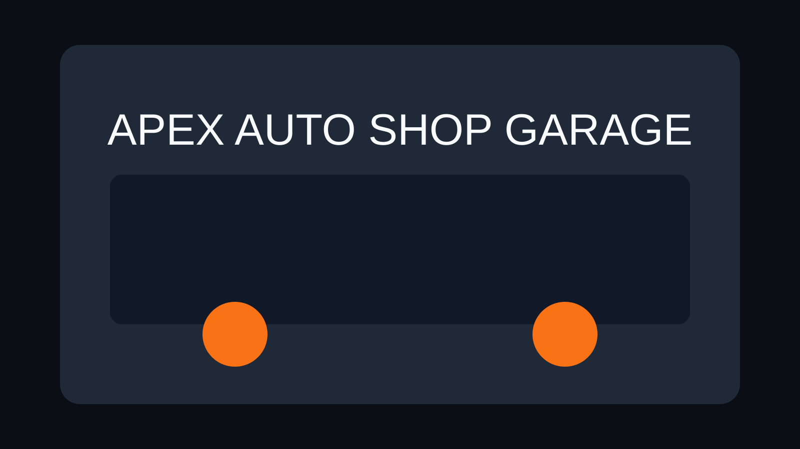
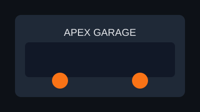

Magazin - recomandari rapide
Vezi oferte pentru evacuari sport, jante aliaj si suspensii reglabile. Catalogul include producator, pret, stoc si compatibilitate.

Piese aftermarket, piese OEM si tuning auto Romania intr-un singur loc.
La Apex Auto Shop gasesti piese auto performanta, accesorii auto si servicii pentru orice proiect de garaj tuning. Platforma noastra de fitment check te ajuta sa alegi rapid piesele compatibile cu masina ta.
Selectorul auto filtreaza rezultate dupa marca, model, an si motorizare. Astfel, in magazinul de piese auto online vezi doar produse relevante. Daca apare o campanie urgenta de stoc, mesajul principal este: stoc limitat pentru kiturile de evacuari sport.
"Performanta reala vine din compatibilitate corecta, nu doar din pret mic."
Pentru clientii noi explicam termenii tehnici: OEM
si piese aftermarket. Un exemplu de termen util este
coilover, adica o suspensie reglabila pe inaltime si rigiditate.
Daca un produs este retras, il marcam clar: Kit Stage 1 vechi Kit Stage 1 revizuit 2026.
Noi spunem uneori, in gluma, ca masina "merge perfect" dupa primul upgrade.
Vezi oferte pentru evacuari sport, jante aliaj si suspensii reglabile. Catalogul include producator, pret, stoc si compatibilitate.

In blog publicam ghiduri pentru montaj evacuare, alegerea uleiului si comparatii intre setup-uri. Recomandam articolul extern despre baze de tuning: Introducere in automotive tuning.
Link catre o referinta externa cu identificator:
https://en.
Citat recomandat din High-Performance Automotive Handbook:
Masoara de doua ori compatibilitatea si monteaza o singura data.
Imagine marita la click:

Descarca ghidul introductiv: Download ghid setup
In tuning, puterea efectiva la roata se calculeaza tinand cont de pierderile din transmisie:
Unde Tmotor este cuplul motorului in lb·ft, n este turatia in RPM, iar ηtransmisie este randamentul transmisiei (de obicei 0.85–0.90 pentru tractiune fata).
Conversia in kilowati:
Videoclipurile de mai jos ruleaza automat unul dupa altul si se reiau de la inceput dupa ultimul:
| Produs | Categorie | Pret (RON) | Stoc |
|---|---|---|---|
| Kit admisie Apex AirFlow | Filtre aer sport | 890 | 24 buc |
| Montaj inclus in service partener | 0 | programare online | |
| Evacuare sport Street Pro | Evacuari sport | 1750 | 11 buc |
| Coilover Track Balance | Suspensii reglabile | 3290 | 7 buc |
| Set jante aliaj 18 inch | Exterior si Interior | 2450 | 9 seturi |
| Preturile includ TVA. Verifica compatibilitatea in selectorul auto inainte de comanda. | |||
Introdu marca, modelul, anul si motorizarea in selectorul auto din pagina Acasa.
Produsul este aproape epuizat si recomandam plasarea comenzii in aceeasi zi.
In sectiunea Blog publicam constant tutoriale pentru piese auto performanta.
Grad ocupare sloturi montaj (valoare mica):
Nivel satisfactie clienti (valoare mare):
Consultati catalogul nostru de produse direct in pagina:
Apasa pe diferitele zone ale garajului pentru a naviga rapid catre sectiunile site-ului:
{kind=link}